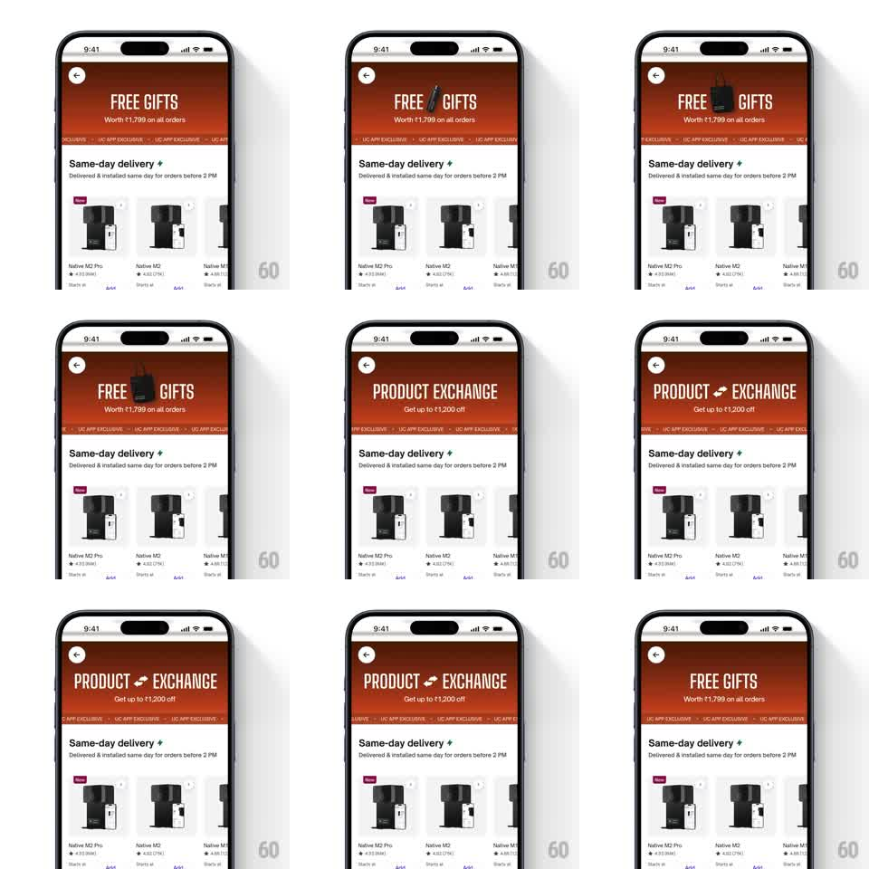

Media
Frame-by-frame

Rebuild this animation 1:1: Urban Company's campaign banner - the headline cycles between offers, an icon drops between the words and pushes them apart, and an "APP EXCLUSIVE" ticker marquees underneath without stopping.

Rebuild this animation 1:1: Urban Company's campaign banner - the headline cycles between offers, an icon drops between the words and pushes them apart, and an "APP EXCLUSIVE" ticker marquees underneath without stopping.
## Integration
Integration: stack-agnostic spec - springs given as stiffness/damping, timed motions as duration + curve; map every value to your framework and animation library of choice.
## Scene
Urban Company product page (Native M2 water purifier): orange gradient campaign banner under the header - big serif headline ("FREE GIFTS" / "PRODUCT EXCHANGE"), subline ("Worth Rs 1,799 on all orders" / "Get up to Rs 1,200 off"), a dashed ticker strip repeating "UC APP EXCLUSIVE" below; the product carousel ("Same-day delivery" section) sits under the banner, static.
## Motion spec
Pattern: cycling offer headlines with icon-driven word split.
- The ticker scrolls left continuously (linear, ~40px/s), seamless loop, never pauses.
- Every ~2.5s the headline swaps: current words split apart (translateX +/-20px, fade out, 200ms) as the new words arrive from the center (reverse, 200ms).
- On the "FREE GIFTS" beat, a small gift-box icon drops between FREE and GIFTS (translateY -16 -> 0, spring ~350/15 with a bounce) and the two words spring apart to make room (translateX to their slots, 250ms).
- The subline crossfades (200ms) a beat after the headline lands.
- The orange gradient background shifts hue subtly across cycles (orange to deep red and back, 5s).
## Calibration
- The banner is a single contained unit - the icon drop never overflows its rounded bounds.
- Serif display type, generous tracking; the icon matches the type's cap height.
## Reduced motion
Headlines crossfade (250ms); icon fades in place; ticker scrolls at half speed or holds static.
## Don't miss
- The word split is symmetric - both words move equally, so the headline stays optically centered.
- The ticker text is clipped to its strip; no bleed into the subline above.